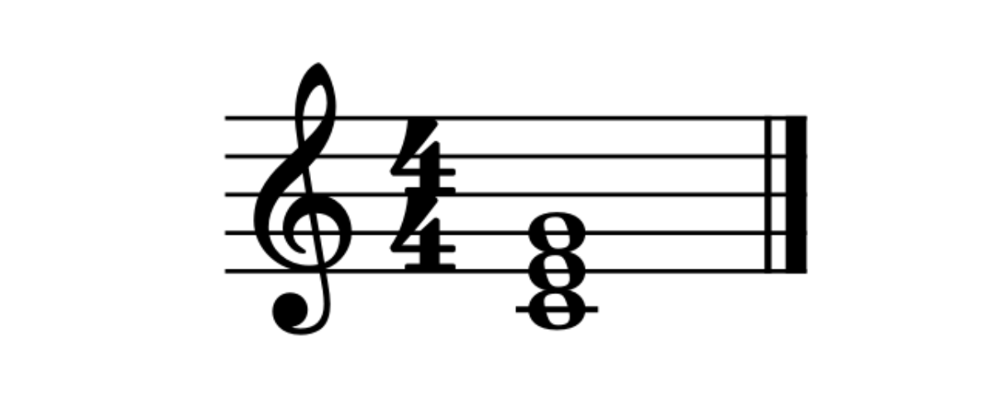
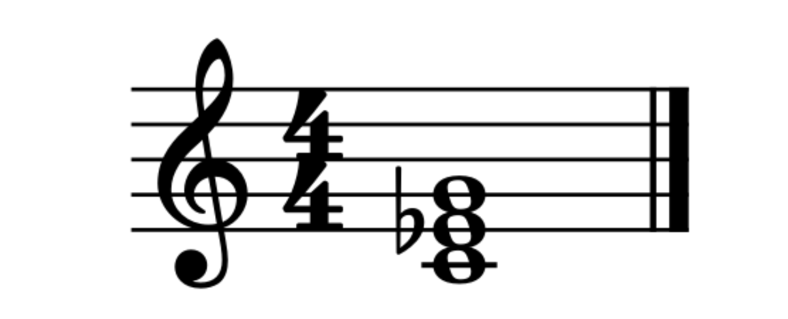

Lección 1: Formación de Acordes (Triadas)
Si las notas son las letras, los acordes son las palabras. ¡Vamos a aprender a formarlos!
¿Qué es un Acorde?
Un acorde es un conjunto de tres o más notas que suenan al mismo tiempo...
La Triada Mayor
Un acorde mayor suena brillante y feliz...
La Triada Menor
Un acorde menor suele sonar más melancólico o triste...
